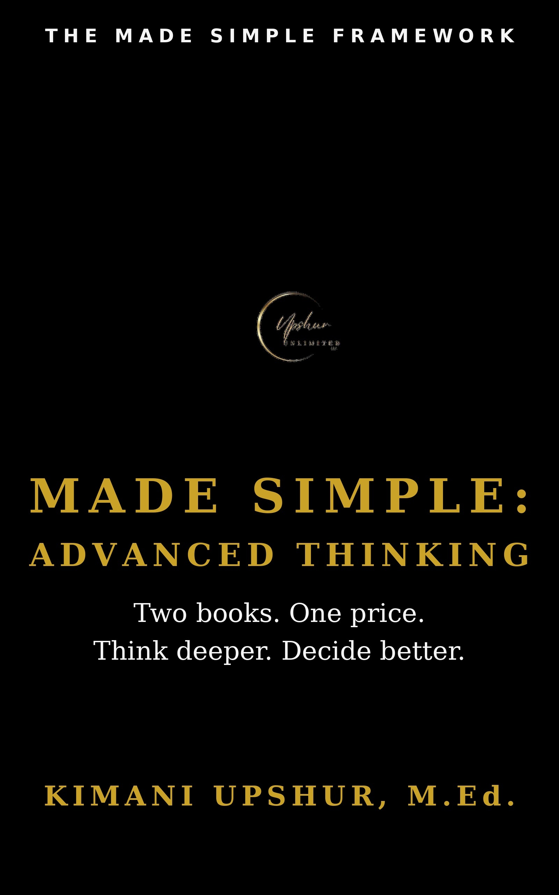

Made Simple: Advanced Thinking

Two books, one price. Made Simple Advanced Thinking bundles Optionality Made Simple and Thinking in Bets Made Simple — two essential tools for navigating an uncertain world. Learn how to preserve your options instead of betting everything on a single prediction, and how to think in bets so you can make better decisions when you don't know the outcome. For anyone who wants to stay in the game long enough to learn, adapt, and get it right. More from Kimani Upshur: https://upshurunlimitedllc.com
- Publisher
- Upshur Unlimited, LLC
- Author
- Kimani Upshur, M.Ed.
- Format
- Ebook
- Language
- English